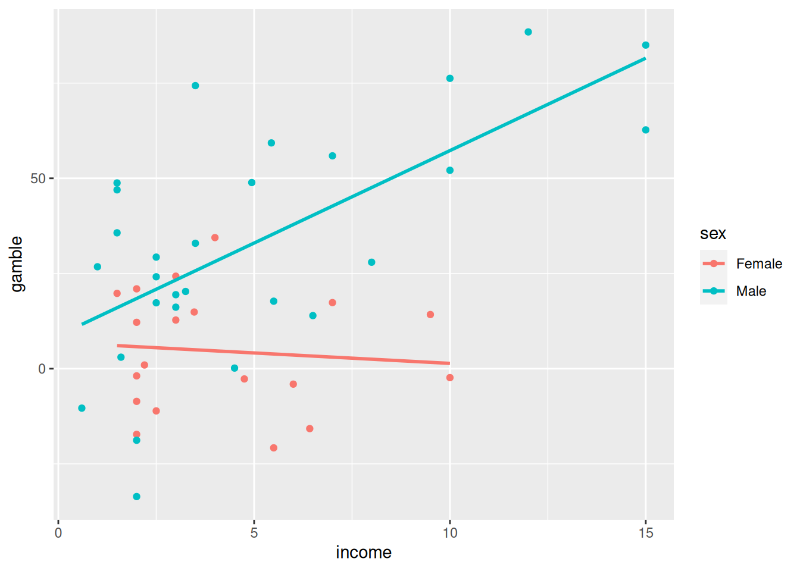

Evaluación curso R
TU NOMBRE, AQUÍ
Entrega
- Recuerda completar tu nombre en el apartado author.
- Además del código, no olvides completar las respuestas a las preguntas indicadas en negrita.
- Si tienes dudas/dificultades, puedes contactar con los profesores.
- Deadline: viernes 16 de junio, 23:59.
- Puedes realizar la entrega en el mail: constantino.garciama@ceu.es.
- La entrega consistirá en el fichero que se genera al hacer
Knit(un ficherohtmlopdf).
Apuestas de adolescentes en UK
El conjunto de datos teengamb.csv contiene datos sobre
las tasas de juego entre los adolescentes en Gran Bretaña, su género y
estatus socioeconómico. Una pregunta que nos puede interesar es
si los ingresos del adolescente y su sexo influyen en la
cantidad de dinero apostado (céntrate solo en las variables
income, sex y gamble) …
Sigue los siguientes pasos para crear un ANCOVA…
1a) Carga los datos…
# Carga los datos
teengamb <- read.csv("teengamb.csv")1b) Visualiza los datos…
…para valorar si el modelo debe incluir interacciones. Para ello, escribe el código que genera una gráfica similar a la siguiente:

library("tidyverse") # carga ggplot## ── Attaching core tidyverse packages ──────────────────────── tidyverse 2.0.0 ──
## ✔ dplyr 1.1.0 ✔ readr 2.1.4
## ✔ forcats 1.0.0 ✔ stringr 1.5.0
## ✔ ggplot2 3.4.1 ✔ tibble 3.2.0
## ✔ lubridate 1.9.2 ✔ tidyr 1.3.0
## ✔ purrr 1.0.1
## ── Conflicts ────────────────────────────────────────── tidyverse_conflicts() ──
## ✖ dplyr::filter() masks stats::filter()
## ✖ dplyr::lag() masks stats::lag()
## ℹ Use the ]8;;http://conflicted.r-lib.org/conflicted package]8;; to force all conflicts to become errors# completa el siguiente código
ggplot(teengamb, aes(x = income, col=sex, y=gamble)) +
geom_point() + # añade la geometría adecuada para los puntos
geom_smooth(method = "lm", se = FALSE) # añade las rectas de regresión## `geom_smooth()` using formula = 'y ~ x'
La gráfica anterior apoya que hay interacciones entre las variables
sex e income. Explica los motivos
brevemente (Pista: ¿son las rectas paralelas?)
2) Crea el modelo…
… y obtén los intervalos de confianza para los coeficientes y su significación.
# Crea un modelo con interacciones en base a tu conclusión del apartado anterior
gamb_model <- lm(gamble ~ sex * income, data = teengamb)
# Obtén p-valores e intervalos de confianza
summary(gamb_model)##
## Call:
## lm(formula = gamble ~ sex * income, data = teengamb)
##
## Residuals:
## Min 1Q Median 3Q Max
## -52.025 -15.479 -3.559 14.022 48.625
##
## Coefficients:
## Estimate Std. Error t value Pr(>|t|)
## (Intercept) 6.8743 9.2446 0.744 0.4612
## sexMale 1.8427 11.1946 0.165 0.8700
## income -0.5489 1.9024 -0.289 0.7743
## sexMale:income 5.4050 2.1435 2.522 0.0155 *
## ---
## Signif. codes: 0 '***' 0.001 '**' 0.01 '*' 0.05 '.' 0.1 ' ' 1
##
## Residual standard error: 20.97 on 43 degrees of freedom
## Multiple R-squared: 0.5105, Adjusted R-squared: 0.4764
## F-statistic: 14.95 on 3 and 43 DF, p-value: 8.279e-07confint(gamb_model)## 2.5 % 97.5 %
## (Intercept) -11.769152 25.517839
## sexMale -20.733425 24.418773
## income -4.385455 3.287728
## sexMale:income 1.082260 9.7277513) Valora si las asunciones del modelo se cumplen
# Interpretar las 4 gráficas siguientes para decidir si las asunciones del modelo
# se cumplen
plot(gamb_model, ask = FALSE)


¿Es el modelo correcto?:
4) Interpreta los coeficientes y escribe tus conclusiones.
De la tabla de p-valores, podemos concluir que para las mujeres: \[gambling = 6.87 - 0.5489 * income\] Mientras que para hombres: \[gambling = 8.72 + 4.8561 * income\]. Fíjate que el coeficiente -0.5489 no es significativo, mientras que el salto en las pendientes entre mujeres y hombres es de 5.4050 y sí es significativo.
¿Cuáles de las siguientes conclusiones son correctas? (puede haber varias)
- Los hombres y mujeres adolescentes apuestan de la misma forma.
- No evidencia suficiente de que las mujeres apuesten de forma diferente según sus ingresos.
- Para los hombres: a mayor nivel de ingresos, mayor cantidad apostada.
- La diferencia entre las pendientes de hombres y mujeres no es significativa.